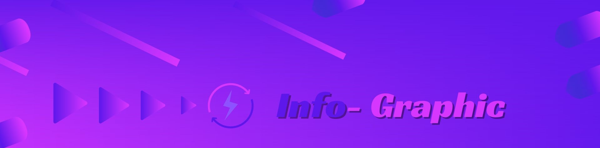

Info - Graghic - Graphics
What is an infographic examples?
Infographics include bar graphs, pie charts,
histograms, line charts, tree diagrams,
mind maps, Gantt charts and network diagrams.
Such tools are often components of business
intelligence software.
What are the benefits of infographics presentation?
* Benefits of using infographics
* Infographics are great to help
people interpret information. ...
* This sort of diagram is pretty accessible
for the general public. ...
* If you want to grasp your
audience's attention, they are great. ...
* They are noticeable for
the use of icons. ...
* Of course, they have
an educational nature.
Info Graphic Colorful Designs

Infographics are used by companies small and large to educate their audience,
build their brands or simply entertain.
They're basically “eye candy” that compiles different
data visualization into a whole. As more and more companies
are
using infographics to reel in consumers,
it's important to learn how to create one.
By Animation or By Symbols

An animated infographic is a way of visualizing information using a combination of imagery, illustrations, charts, graphs, text and other elements that are animated to add movement. Over the last five years, infographics have become heavily relied upon as a device to make complex information palatable.
Light and Dark with animation

Though this we can show our presentation light to dark or dark to light on animations
Minimalist Design

Minimalist interior design is very similar to modern interior design and involves using the bare essentials to create a simple and uncluttered space. It's characterised by simplicity, clean lines, and a monochromatic palette with colour used as an accent.
Simple office official types

The simple and neat look with this . And a very colorful design